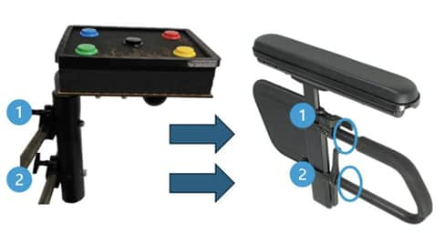
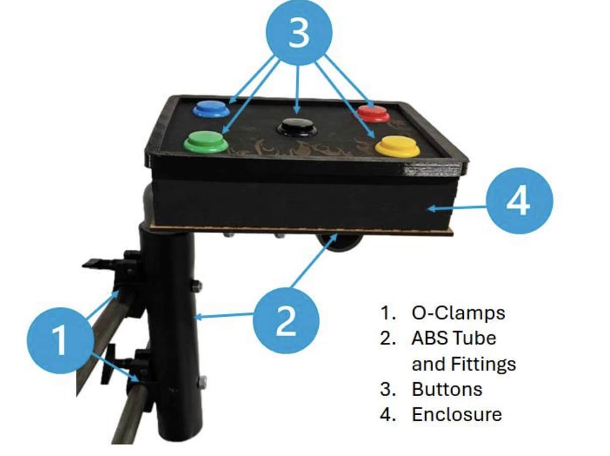
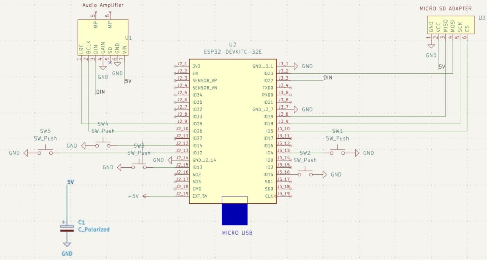
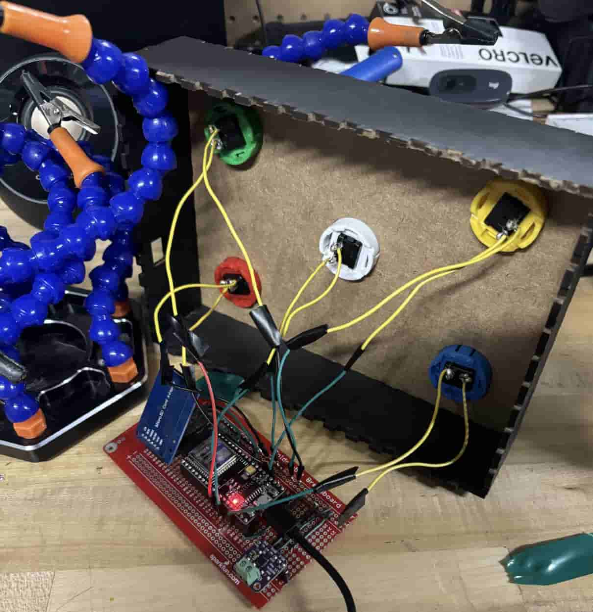
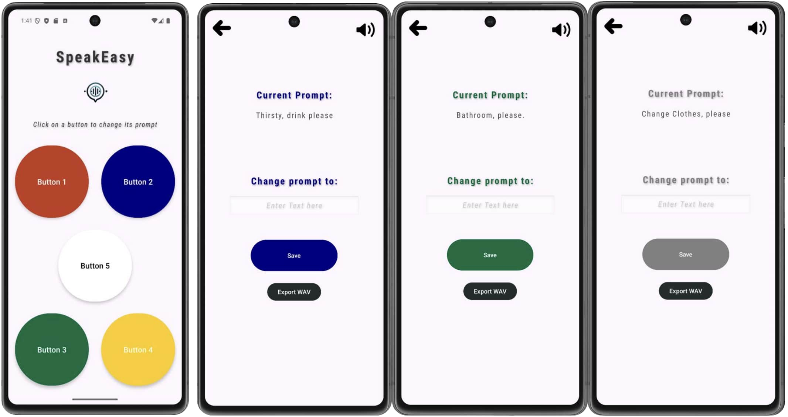

EMBEDDED SYSTEMS & ACCESSIBILITY
SpeakEasy
Accessible communication with an ESP32 and Android app.
A custom communication device for a non-verbal client with cerebral palsy, combining tactile inputs, an ESP32-based circuit, and an Android app for real-time text-to-speech prompts.

Requirements
Working directly with the client, we identified the need for a device that was simple to operate through tactile input and practical to use throughout a working day.
Hardware and software together
Designed a custom circuit board with an ESP32 Arduino board and tactile push buttons for wheelchair mounting. Developed the SpeakEasy Android app to update text-to-speech prompts over Bluetooth.
Audio and integration
Implemented Wi-Fi network audio streaming to transfer WAV files to the circuit board speaker. The physical assembly, wireless connection, and app were brought together into a single communication system.
Validation and impact
Validated the device through direct client testing in a workplace setting. The original project report records a 140% increase in social interactions during the evaluation.
Technical scope
Human-centered engineering, embedded integration, circuit design, mobile development, and iteration based on direct user feedback.
A closer look



